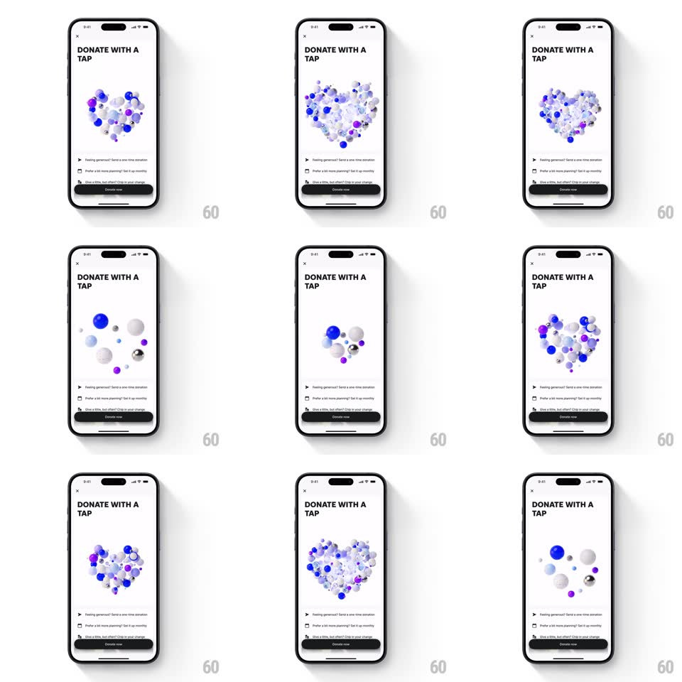

Media
Frame-by-frame

Rebuild this animation 1:1: Revolut's donate screen - a 3D heart built from dozens of spheres loops through assembling into a heart, exploding outward, and gathering back, above the "DONATE WITH A TAP" donation sheet.

Rebuild this animation 1:1: Revolut's donate screen - a 3D heart built from dozens of spheres loops through assembling into a heart, exploding outward, and gathering back, above the "DONATE WITH A TAP" donation sheet. ## Integration Integration: stack-agnostic spec - springs given as stiffness/damping, timed motions as duration + curve; map every value to your framework and animation library of choice. ## Scene White sheet: X top-left, "DONATE WITH A TAP" headline, a large central stage where a heart shape is formed by roughly 40 shaded spheres (white, Revolut blue, purple) of varying sizes, then three donation option rows and a dark "Donate now" button. ## Motion spec Pattern: particle assemble/explode loop, ~4s cycle. - Assembled: the spheres hold a heart silhouette with a gentle idle bob (each sphere +-4px, randomized 2-3s periods, phase-offset). - Explode: the spheres scatter outward (500ms, ease-out) with slight individual rotations, spreading to fill the stage loosely. - Gather: they fly back to their heart positions (700ms, ease-in-out) with per-sphere delay up to 150ms, so the heart re-forms unevenly. - Depth: spheres scale and shade by z-depth (near spheres up to 1.6x the far ones) and drift slowly toward/away from the camera on idle. ## Calibration - The heart reads clearly at rest: two lobes, a point, no gaps larger than one sphere. - Spheres never overlap the headline or the option rows - the stage is bounded. ## Reduced motion The heart is static, fully assembled. ## Don't miss - The scatter is volumetric - spheres spread in depth as well as x/y. - Reassembly is staggered, not simultaneous; the heart "clicks" together piece by piece.